Random number tables from A Million Random Digits with 100,000 Normal Deviates by the RAND Corporation
In 1947, the RAND Corporation produced a peculiar book titled A Million Random Digits with 100,000 Normal Deviates. The book wasn’t a work of literature or a philosophical treatise on randomness. Rather, it was a table of random numbers generated using an electronic simulation of a roulette wheel. This book was one of the last in a series of random-number tables produced from the mid-1920s to the 1950s. With the development of high-speed computers, it became faster to generate pseudorandom numbers than to read them from tables, and so this era of printed random-number tables ultimately came to an end.
Here we are: the beginning. If it’s been a while since you’ve programmed in JavaScript (or done any math, for that matter), this chapter will reacquaint your mind with computational thinking. To start your coding-of-nature journey, I’ll introduce you to some foundational tools for programming simulations: random numbers, random distributions, and noise. Think of this as the first (zeroth!) element of the array that makes up this book—a refresher and a gateway to the possibilities that lie ahead.
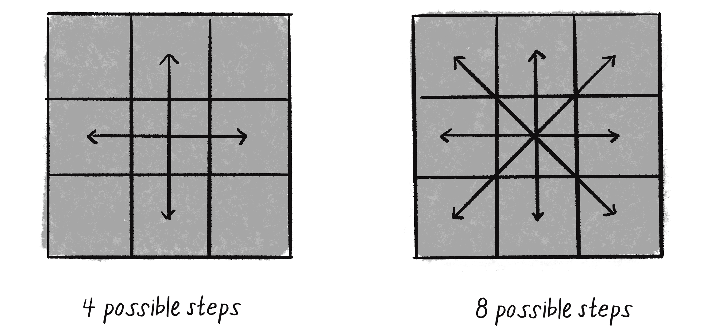
In Chapter 1, I’m going to talk about the concept of a vector and how it will serve as the building block for simulating motion throughout this book. But before I take that step, let’s think about what it means for something to move around a digital canvas. I’ll begin with one of the best-known and simplest simulations of motion: the random walk.
Random Walks
Imagine you’re standing in the middle of a balance beam. Every 10 seconds, you flip a coin. Heads, take a step forward. Tails, take a step backward. This is a random walk, a path defined as a series of random steps. Stepping (carefully) off that balance beam and onto the floor, you could expand your random walk from one dimension (moving only forward and back) to two dimensions (moving forward, back, left, and right). Now that there are four possibilities, you’d have to flip the same coin twice to determine each next step.
Flip 1
Flip 2
Result
Heads
Heads
Step forward.
Heads
Tails
Step right.
Tails
Heads
Step left.
Tails
Tails
Step backward.
This may seem like an unsophisticated algorithm, but you can use random walks to model all sorts of phenomena that occur in the real world, from the movements of molecules in a gas, to the foraging of an animal, to the behavior of a gambler spending a day at the casino. For our purposes, the random walk is the perfect place to start for three reasons:
I’d like to review a programming concept central to this book: object-oriented programming (OOP). The random walker I’m about to create will serve as a template for using object-oriented design to make things that move around a computer graphics canvas.
The random walk instigates the two questions that I’ll ask over and over again throughout this book: “How do you define the rules that govern the behavior of your objects?” and then, “How do you implement these rules in code?”
You’ll periodically need a basic understanding of randomness, probability, and Perlin noise for this book’s projects. The random walk will allow me to demonstrate key points that will come in handy later.
An object in JavaScript is an entity that has both data and functionality. In this case, a Walker object should have data about its position on the canvas and functionality such as the capability to draw itself or take a step.
A class is the template for building actual instances of objects. Think of a class as the cookie cutter and objects as the cookies themselves. To create a Walker object, I’ll begin by defining the Walker class—what it means to be a walker.
A walker needs only two pieces of data: a number for its x-position and a number for its y-position. I’ll initialize them to the center of the canvas to set the object’s starting position. I can do this in the class’s constructor function, appropriately named constructor(). You can think of the constructor as the object’s setup() function. It’s responsible for defining the initial properties of an object, much like setup() does for the entire sketch:
class Walker {
// Objects have a constructor where they are initialized.
constructor() {
// Objects have data.
this.x = width / 2;
this.y = height / 2;
}
Notice the use of the keyword this to attach the properties to the newly created object itself: this.x and this.y.
In addition to data, classes can be defined with functionality. In this example, a Walker object has two functions, known as methods in an OOP context. While methods are essentially functions, the distinction is that methods are defined inside a class and therefore are associated with an object or class, whereas functions aren’t. The function keyword is a nice clue: you’ll see it when defining stand-alone functions, but it won’t appear inside a class. I’ll try my best to use the terms consistently in this book, but it’s common for programmers to use the terms function and method interchangeably.
The first method, show(), includes the code to draw the object (as a black dot). Once again, never forget the this. when referencing the properties (variables) of that object:
// Objects have methods.
show() {
stroke(0);
point(this.x, this.y);
}
The next method, step(), directs the Walker object to take a step. This is where things get a bit more interesting. Remember taking steps in random directions on a floor? Now I’ll use a p5.js canvas to represent that floor. There are four possible steps. A step to the right can be simulated by incrementing x with x++; to the left by decrementing x with x--; forward by going up a pixel (y--); and backward by going down a pixel (y++). But how can the code pick from these four choices?
Earlier I stated that you could flip two coins. In p5.js, however, when you want to randomly choose from a list of options, you can simply generate a random number with the random() function. It picks a random floating-point (decimal) value within any range you want. Here, I use 4 to indicate a range of 0 to 4:
let choice = floor(random(4));
I declare a variable choice and assign it a random integer (whole number) by using floor() to remove the decimal places from the random floating-point number. Technically speaking, the number generated by random(4) lies within the range of 0 (inclusive) to 4 (exclusive), meaning it can never actually be 4.0. The highest possible number it could generate is just below 4—3.999999999 (with as many 9s as JavaScript will allow), which floor() then truncates down to 3, removing the decimal part. Therefore, I’ve effectively assigned choice a value of 0, 1, 2, or 3.
Coding Conventions
In JavaScript, variables can be declared using either let or const. A typical approach is to declare all variables with const and change to let when needed. In this first example, const would be appropriate for declaring choice as it’s never reassigned a new value over the course of its life inside each call to step(). While this differentiation is important, I’m choosing to follow the p5.js example convention and declare all variables with let.
I recognize that JavaScript has both const and let for important reasons. However, the distinction can be a distraction and confusing for beginners. I encourage you to explore the topic further and make your own decisions about how to best declare variables in your own sketches. For more, you can read the discussion surrounding issue #3877 in the p5.js GitHub repository.
I’m also choosing to use JavaScript’s strict equality (===) operator (and its inequality counterpart, !==). This Boolean operator tests both value and type equality. For example, 3 === '3' will evaluate to false because the types are different (number versus string), even though they look similar. On the other hand, using the loose equality (==) operator in 3 == '3' would result in true because the two different types are converted to be comparable. Although the loose comparison often works fine, it can sometimes lead to unexpected results, so === is probably the safer choice.
Next, the walker takes the appropriate step (left, right, up, or down), depending on which random number was picked. Here’s the full step() method closing out the Walker class:
step() {
//{!1} 0, 1, 2, or 3. The random choice determines the step.
let choice = floor(random(4));
if (choice === 0) {
this.x++;
} else if (choice === 1) {
this.x--;
} else if (choice === 2) {
this.y++;
} else {
this.y--;
}
}
}
Now that I’ve written the class, it’s time to make an actual Walker object in the sketch itself. Assuming you’re looking to model a single random walk, start with a single global variable:
// A Walker object
let walker;
Then create the object in setup() by referencing the class name with the new operator:
//{!1} Remember how p5.js works? setup() is executed once when the sketch starts.
function setup() {
createCanvas(640, 240);
// Create the walker.
walker = new Walker();
background(255);
}
Finally, during each cycle through draw(), the walker takes a step and draws a dot.
Example 0.1: A Traditional Random Walk
Each time you see one of these example boxes, it means that code is available in the p5.js web editor and on the book’s website. If you’re reading this book offline, you’ll see only a screenshot of the resulting canvas.
//{!1} Then draw() loops forever and ever (until you quit).
function draw() {
// Call functions on the walker.
walker.step();
walker.show();
}
Since the background is drawn once in setup(), rather than clearing it continually each time through draw(), the trail of the random walk is visible in the canvas.
I could make a couple of adjustments to the random walker. For one, this Walker object’s steps are limited to four options: up, down, left, and right. But any given pixel in the canvas could have eight possible neighbors, including diagonals (see Figure 0.1). A ninth possibility, to stay in the same place, could also be an option.
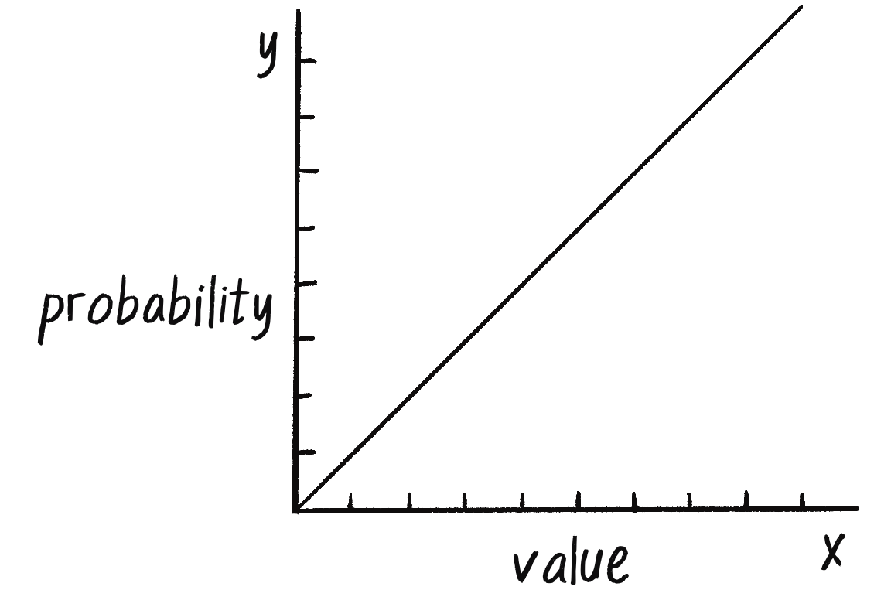
Figure 0.1: The steps of a random walker, with and without diagonals
To implement a Walker object that can step to any neighboring pixel (or stay put), I could pick a number from 0 to 8 (nine possible choices). However, another way to write the code would be to pick from three possible steps along the x-axis (–1, 0, or 1) and three possible steps along the y-axis:
step() {
//{!2} Yields –1, 0, or 1
let xstep = floor(random(3)) - 1;
let ystep = floor(random(3)) - 1;
this.x += xstep;
this.y += ystep;
}
Taking this further, I could get rid of floor() and use the random() function’s original floating-point numbers to create a continuous range of possible step lengths from –1 to 1, as shown next.
step() {
//{!2} Any floating-point number from –1 to 1
let xstep = random(–1, 1);
let ystep = random(–1, 1);
this.x += xstep;
this.y += ystep;
}
All of these variations on the traditional random walk have one thing in common: at any moment in time, the probability that the walker will take a step in a given direction is equal to the probability that the walker will take a step in any other direction. In other words, if there are four possible steps, there is a 1 in 4 (or 25 percent) chance the walker will take any given step. With nine possible steps, it’s a 1 in 9 chance (about 11.1 percent).
Conveniently, this is how the random() function works. p5.js’s random-number generator (which operates behind the scenes) produces a uniform distribution of numbers. You can test this distribution by counting each time a random number is picked and graphing those values.
Example 0.2: A Random-Number Distribution
// An array to keep track of how often random numbers are picked
let randomCounts = [];
// The total number of counts
let total = 20;
function setup() {
createCanvas(640, 240);
for (let i = 0; i < total; i++) {
randomCounts[i] = 0;
}
}
function draw() {
background(255);
//{!2} Pick a random number and increase the count.
let index = floor(random(randomCounts.length));
randomCounts[index]++;
stroke(0);
fill(127);
let w = width / randomCounts.length;
// Graph the results.
for (let x = 0; x < randomCounts.length; x++) {
rect(x * w, height - randomCounts[x], w - 1, randomCounts[x]);
}
}
Notice that each bar of the graph differs slightly in height. The sample size (the number of random numbers picked) is small, so occasional discrepancies emerge as certain numbers are picked more often than others. Over time, with a good random-number generator, this distribution would even out.
Pseudorandom Numbers
The random numbers from the random() function aren’t truly random; instead, they’re pseudorandom because they’re the result of a mathematical function that merely simulates randomness. This function would yield a pattern over time and thus stop seeming to be random. That time period is so long, however, that random() is random enough for the examples in this book.
Exercise 0.1
Create a random walker that has a greater tendency to move down and to the right. (The solution follows in the next section.)
Probability and Nonuniform Distributions
Uniform randomness often isn’t the most thoughtful solution to a design problem—in particular, the kind of problem that involves building an organic or natural-looking simulation. With a few tricks, however, the random() function can instead produce nonuniform distributions of random numbers, where some outcomes are more likely than others. This type of distribution can yield more interesting, seemingly natural results.
Think about when you first started programming with p5.js. Perhaps you wanted to draw a lot of circles on the screen, so you said to yourself, “Oh, I know! I’ll draw all these circles at random positions, with random sizes and random colors.” Seeding a system with randomness is a perfectly reasonable starting point when you’re learning the basics of computer graphics, but in this book, I’m looking to build systems modeled on what we see in nature, and uniform randomness won’t always cut it. Sometimes you have to put your thumb on the scales a little bit.
Creating a nonuniform distribution of random numbers will come in handy throughout the book. In Chapter 9’s genetic algorithms, for example, I’ll need a methodology for performing selection—which members of the population should be selected to pass their DNA to the next generation? This is akin to the Darwinian concept of survival of the fittest. Say you have an evolving population of monkeys. Not every monkey has an equal chance of reproducing. To simulate Darwinian natural selection, you can’t simply pick two random monkeys to be parents. The more “fit” ones should be more likely to be chosen. This could be considered the probability of the fittest.
Let me pause here and take a look at probability’s basic principles so I can apply more precise words to the coding examples to come. I’ll start with single-event probability—the likelihood that a given event will occur. In probability, outcomes refer to all the possible results of a random process, and an event is the specific outcome or combination of outcomes being considered.
If you have a scenario where each outcome is just as likely as the others, the probability of a given event occurring equals the number of outcomes that match that event divided by the total number of all potential outcomes. A coin toss is a simple example: it has only two possible outcomes, heads or tails. There’s only one heads, so the probability that the coin will turn up heads is 1 divided by 2: 1/2, or 50 percent.
Take a deck of 52 cards. The probability of drawing an ace from that deck is as follows:
\textrm{number of aces } / \textrm{ number of cards} = 4 / 52 = 0.077 \approx 8\%
The probability of drawing a diamond is shown here:
\textrm{number of diamonds }/ \textrm{ number of cards} = 13 / 52 = 0.25 = 25\%
You can also calculate the probability of multiple events occurring in sequence by multiplying the individual probabilities of each event. For example, here’s the probability of a coin turning up heads three times in a row:
This indicates a coin will turn up heads three times in a row one out of eight times on average. If you flip a coin three times in a row 500 times, you would expect to see an outcome of three consecutive heads an average of one-eighth of the time, or about 63 times.
Exercise 0.2
What is the probability of drawing two aces in a row from a deck of 52 cards, if you reshuffle your first draw back into the deck before making your second draw? What would that probability be if you didn’t reshuffle after your first draw?
You can use the random() function in a couple of ways to apply the concepts of probability in your code for a nonuniform distribution. One technique is to fill an array with numbers—some of which are repeated—and then choose random elements from that array and generate events based on those choices:
// 1 and 3 are stored in the array twice, making them more likely to be picked than 2.
let stuff = [1, 1, 2, 3, 3];
//{!1} Pick a random element from an array.
let value = random(stuff);
print(value);
The five-member array has two 1s, so running this code will produce a two-out-of-five chance, or 40 percent chance, of printing the value 1. Likewise, there’s a 20 percent chance of printing 2 and a 40 percent chance of printing 3.
You can also ask for a random number (let’s make it simple and just consider random floating-point values from 0 to 1) and allow an event to occur only if the random number is within a certain range. For example:
// A probability of 10%
let probability = 0.1;
// A random floating point from 0 to 1
let r = random(1);
// If the random number is less than 0.1, sing!
if (r < probability) {
print("Sing!");
}
One-tenth of the floating-point numbers from 0 to 1 are less than 0.1, so this code will lead to singing only 10 percent of the time.
You can use the same approach to apply unequal weights to multiple outcomes. Let’s say you want singing to have a 60 percent chance of happening; dancing, a 10 percent chance; and sleeping, a 30 percent chance. Again, you can pick a random number from 0 to 1 and see where it falls:
From 0.0 to 0.6 (60 percent) → Singing
From 0.6 to 0.7 (10 percent) → Dancing
From 0.7 to 1.0 (30 percent) → Sleeping
let num = random(1);
// If the random number is less than 0.6
if (num < 0.6) {
print("Sing!");
// Greater than or equal to 0.6 and less than 0.7
} else if (num < 0.7) {
print("Dance!");
// All other cases (greater than or equal to 0.7)
} else {
print("Sleep!");
}
Now let’s apply this methodology to the random walker so it tends to move in a particular direction. Here’s an example of a Walker object with the following probabilities:
Chance of moving up: 20 percent
Chance of moving down: 20 percent
Chance of moving left: 20 percent
Chance of moving right: 40 percent
Example 0.3: A Walker That Tends to Move to the Right
step() {
let r = random(1);
//{!2} A 40% chance of moving to the right
if (r < 0.4) {
this.x++;
} else if (r < 0.6) {
this.x--;
} else if (r < 0.8) {
this.y++;
} else {
this.y--;
}
}
Another common use of this technique is to control the probability of an event that you want to occur sporadically in your code. For example, let’s say you create a sketch that starts a new random walker at regular time intervals (every 100 frames). With random(), you could instead assign a 1 percent chance of a new walker starting. The end result is the same (a new walker every 1 out of 100 frames on average), but the latter incorporates chance and feels more dynamic and unpredictable.
Exercise 0.3
Create a random walker with dynamic probabilities. For example, can you give it a 50 percent chance of moving in the direction of the mouse? Remember, you can use mouseX and mouseY to get the current mouse position in p5.js!
A Normal Distribution of Random Numbers
Another way to create a nonuniform distribution of random numbers is to use a normal distribution, where the numbers cluster around an average value. To see why this is useful, let’s go back to that population of simulated monkeys and assume your sketch generates a thousand Monkey objects, each with a random height value of 200 to 300 (as this is a world of monkeys that have heights of 200 to 300 pixels):
let h = random(200, 300);
Is this an accurate algorithm for creating a population of monkey heights? Think of a crowded sidewalk in New York City. Pick any person off the street, and it may appear that their height is random. Nevertheless, it’s not the kind of random that random() produces by default. People’s heights aren’t uniformly distributed; there are many more people of about average height than there are very tall or very short ones. To accurately reflect this population, random heights close to the mean (another word for average) should be more likely to be chosen, while outlying heights (very short or very tall) should be rarer.
That’s exactly how a normal distribution (sometimes called a Gaussian distribution, after mathematician Carl Friedrich Gauss) works. A graph of this distribution is informally known as a bell curve. The curve is generated by a mathematical function that defines the probability of any given value occurring as a function of the mean (often written as μ, the Greek letter mu) and standard deviation (σ, the Greek letter sigma).
In the case of height values from 200 to 300, you probably have an intuitive sense of the mean (average) as 250. However, what if I were to say that the standard deviation is 3? Or 15? What does this mean for the numbers? The graphs depicted in Figure 0.2 should give you a hint.
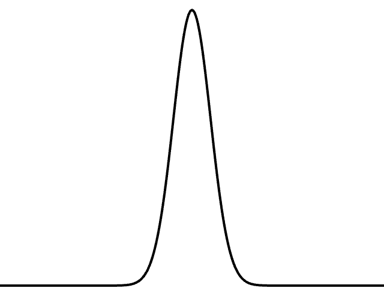
Figure 0.2: Two example bell curves of a normal distribution, with a low (left) and high (right) standard deviation
On the left is a distribution with a very low standard deviation, with the majority of the values piling up around the mean (they don’t deviate much from the standard). The version on the right has a higher standard deviation, so the values are more evenly spread out from the average (they deviate more).
The numbers work out as follows: given a population, 68 percent of its members will have values in the range of one standard deviation from the mean, 95 percent within two standard deviations, and 99.7 percent within three standard deviations. Given a standard deviation of 5 pixels, only 0.3 percent of the monkey heights will be less than 235 pixels (three standard deviations below the mean of 250) or greater than 265 pixels (three standard deviations above the mean of 250). Meanwhile, 68 percent of the monkey heights will be from 245 to 255 pixels.
Luckily, to use a normal distribution of random numbers in a p5.js sketch, you don’t have to do any of these calculations manually. Instead, the randomGaussian() function takes care of the math and returns random numbers with a normal distribution:
function draw() {
// Ask for a Gaussian random number.
let num = randomGaussian();
}
Calculating Mean and Standard Deviation
Consider a class of 10 students who receive the following scores (out of 100) on a test: 85, 82, 88, 86, 85, 93, 98, 40, 73, and 83.
The mean is the average: 81.3.
The standard deviation is calculated as the square root of the average of the squares of deviations around the mean. In other words, take the difference between the mean and each person’s grade, and square it, giving you that person’s squared deviation. Next, calculate the average of all these values to get the average variance. Then, take the square root of the average variance, and you have the standard deviation.
Score
Difference from Mean
Variance
85
85 - 81.3 = 3.7
(3.7)^2 = 13.69
40
40 - 81.3 = -41.3
(-41.3)^2 = 1,705.69
. . .
Average Variance:
228.21
The standard deviation is the square root of the variance: 15.13.
What next? What if, for example, the goal is to assign the x-position of a shape drawn?
By default, the randomGaussian() function returns a normal distribution of random positive and negative numbers with a mean of 0 and a standard deviation of 1. This is also known as the standard normal distribution. Often, however, these default parameters won’t work. For example, say you want to randomly assign the x-position of a shape by using a normal distribution with a mean of 320 (the center horizontal pixel in a window of width 640) and a standard deviation of 60 pixels. In this case, you can adjust the parameters by passing the randomGaussian() function two arguments: the mean followed by the standard deviation.
Example 0.4: A Gaussian Distribution
function draw() {
//{!1} A normal distribution with mean 320 and standard deviation 60
let x = randomGaussian(320, 60);
noStroke();
fill(0, 10);
circle(x, 120, 16);
}
Here I’ve used arguments to customize the call to randomGaussian(), but note that the math to implement this customization is quite simple: all you have to do is multiply the value from the standard normal distribution by the standard deviation and then add the mean. In other words, assigning x to randomGaussian(320, 60) is the same as the following:
let x = 60 * randomGaussian() + 320;
By drawing the circles on top of one another with transparency, you can begin to see the distribution. The darkest spot is near the center, where most of the values cluster, but every so often circles are drawn farther to the right or left of the center.
Exercise 0.4
Consider a simulation of paint splatter drawn as a collection of colored dots. Most of the paint clusters around a central position, but some dots splatter out toward the edges. Can you use a normal distribution of random numbers to generate the positions of the dots? Can you also use a normal distribution of random numbers to generate a color palette? Try creating a slider to adjust the standard deviation.
Exercise 0.5
A Gaussian random walk is defined as one in which the step size (how far the object moves in a given direction) is generated with a normal distribution. Implement this variation of the Walker class.
A Custom Distribution of Random Numbers
There will come a time in your life when you don’t want a uniform distribution of random values, or even a Gaussian one. Imagine for a moment that you’re a random walker in search of food. Moving randomly around a space seems like a reasonable strategy for finding something to eat. After all, you don’t know where the food is, so you might as well search randomly until you find it. However, there’s a problem. As you may have noticed while watching your Walker object in action, random walkers return to previously visited positions many times, a phenomenon known as oversampling. This could make your search for food fruitless, or at least inefficient.
One strategy to avoid such a problem is to take a very large step every so often. This allows the walker to forage randomly around a specific position while periodically jumping far away to reduce the amount of oversampling. This variation on the random walk, known as a Lévy flight, requires a custom set of probabilities. Though it’s not an exact implementation of a Lévy flight, you could state the probability distribution as follows: the longer the step, the less likely it is to be picked; the shorter the step, the more likely.
Earlier I wrote that you could generate custom probability distributions by filling an array with values (some duplicated so as to be picked more frequently) or by testing the result of random(). One way to implement a Lévy flight might be to specify a 1 percent chance of the walker taking a large step:
let r = random(1);
//{!3} A 1% chance of taking a large step
if (r < 0.01) {
xstep = random(-100, 100);
ystep = random(-100, 100);
} else {
xstep = random(-1, 1);
ystep = random(-1, 1);
}
However, this reduces the probabilities to a fixed number of options: 99 percent of the time, a small step; 1 percent of the time, a large step. What if you instead wanted to make a more general rule, such as the higher a number, the more likely it is to be picked? For example, 0.8791 would be more likely to be picked than 0.8532, even if that likelihood is just a tiny bit greater. In other words, if x is the random number, the likelihood of it being picked could be mapped to the y-axis with the function y = x (Figure 0.3).
Figure 0.3: A graph of y = x, where y is the probability that a value x will be picked
If a distribution of random numbers can be generated according to the graph in Figure 0.3, you should also be able to generate a random distribution that follows any other curve you can define with a formula.
One solution for a custom distribution is to pick two random numbers instead of one. The first random number is just that, a random number. The second one, however, is what I’ll call a qualifying random value. This value is used by the program to decide whether to use that first number or throw it away and pick another. Numbers that have an easier time qualifying will be picked more often, and numbers that rarely qualify will be picked infrequently. Here are the steps (for now, I’ll consider only random values from 0 to 1):
Pick a random number: r1.
Compute a probability p that r1 should qualify. Let’s try: p = r1.
Pick another random number: r2.
If r2 is less than p, you’ve found your number: r1!
If r2 isn’t less than p, go back to step 1 and start over.
Here, the likelihood that a random value will qualify is equal to the random number itself, just as you saw in Figure 0.3. If r1 equals 0.1, for example, r1 will have a 10 percent chance of qualifying. If r1 equals 0.83, it will have an 83 percent chance of qualifying. The higher the number, the greater the likelihood that it gets used.
This process is called the accept-reject algorithm, a type of Monte Carlo method (named for the Monte Carlo Casino). The following example features a function that implements the accept-reject algorithm, returning a random value from 0 to 1.
Example 0.5: An Accept-Reject Distribution
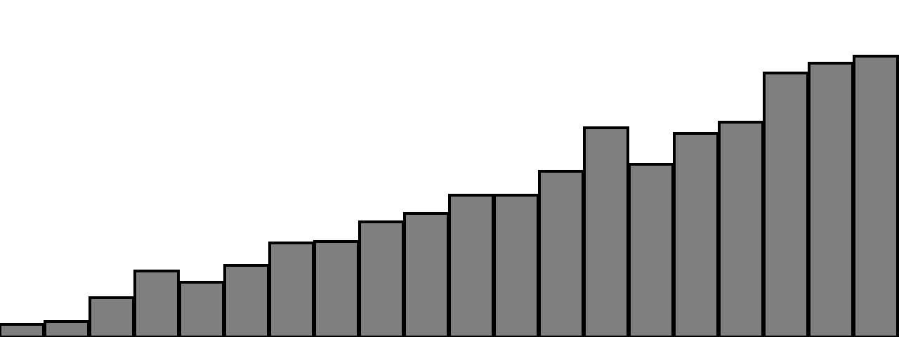
function acceptreject() {
// Do this “forever” until you find a qualifying random value.
while (true) {
// Pick a random value.
let r1 = random(1);
// Assign a probability.
let probability = r1;
// Pick a second random value.
let r2 = random(1);
// Does it qualify? If so, you’re done!
if (r2 < probability) {
return r1;
}
}
}
While the accept-reject algorithm does work for generating custom distributions of random numbers, this technique is not particularly efficient. It can lead to a considerable amount of wasted computation when a large number of random values are rejected, especially when the qualifying probability is very low. When I get to genetic algorithms in Chapter 9, I’ll take a different, more optimal approach.
Exercise 0.6
Use a custom probability distribution to vary the size of the random walker’s steps. The step size can be determined by influencing the range of values picked with a qualifying random value. Can you map the probability to a quadratic function by making the likelihood that a value is picked equal to the value squared?
// A uniform distribution of random step sizes. Change this!
let step = 10;
let stepx = random(-step, step);
let stepy = random(-step, step);
this.x += stepx;
this.y += stepy;
(In Chapter 1, I’ll show how to vary the step sizes more efficiently with vectors.)
A Smoother Approach with Perlin Noise
A good random-number generator produces numbers that have no relationship to one another and show no discernible pattern. As I’ve hinted, however, while a little bit of randomness can be a good thing when programming organic, lifelike behaviors, uniform randomness as the single guiding principle isn’t necessarily natural. An algorithm known as Perlin noise, named for its inventor, Ken Perlin, takes this concept into account by producing a naturally ordered sequence of pseudorandom numbers, where each number in the sequence is quite close in value to the one before it. This creates a “smooth” transition between the random numbers and a more organic appearance than pure noise, making Perlin noise well suited for generating various effects with natural qualities, such as clouds, landscapes, and patterned textures like marble.
To illustrate the difference between Perlin noise and uniform randomness, consider Figure 0.4. The graph on the left shows Perlin noise over time, with the x-axis representing time; note the smoothness of the curve. The graph on the right shows noise in the form of purely random numbers over time; the result is much more jagged. (The code for generating these graphs is available on the book’s website.)
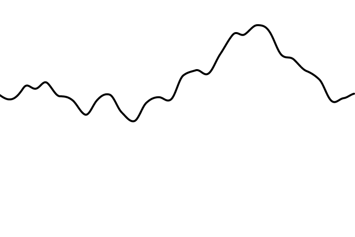
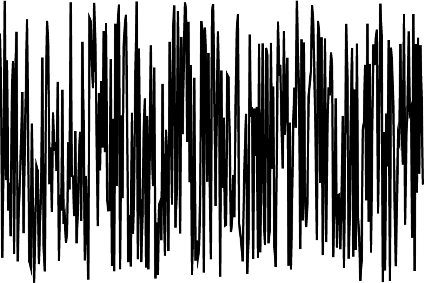
Figure 0.4: A graph of Perlin noise values over time (left) and of random noise values over time (right)
Ken Perlin developed the original Perlin noise algorithm while working on the movie Tron in the early 1980s; he later received an Academy Award in technical achievement for this work. The algorithm was designed to create procedural textures for computer-generated effects. (Procedural refers to generating the visual elements algorithmically, rather than an artist manually designing them.) Over the years, a variety of other flavors of noise have been developed by different authors. Some notable ones are value noise, Worley noise, and simplex noise (developed by Perlin himself in 2001). You can learn more about the history of Perlin noise at Ken Perlin’s website and its variations over the years in my “What Is OpenSimplex Noise?” video on the Coding Train website.
The p5.js library incorporates an implementation of the classic 1983 Perlin noise algorithm in a function called noise(). It can take one, two, or three arguments, as noise is computed in one, two, or three dimensions. I’ll start by showing you one-dimensional (1D) noise.
Say you want to draw a circle on a canvas at a random x-position. Out of habit, you might use the random() function:
//{!1} A random x-position
let x = random(0, width);
circle(x, 180, 16);
Now, instead of a random x-position, you want a smoother Perlin noise x-position. You might think that all you need to do is replace random() with an identical call to noise(), like so:
// Replace random() with noise()?
let x = random(0, width);
// Tempting, but this is not correct!
let x = noise(0, width);
circle(x, 180, 16);
Conceptually, this is exactly what you want to do—calculate an x-value that ranges from 0 to the width according to Perlin noise—but this isn’t the correct implementation. While the arguments to the random() function specify a range of values between a minimum and a maximum, noise() doesn’t work this way. Instead, its output range is fixed: it always returns a value from 0 to 1. You’ll see in a moment that you can get around this easily with p5.js’s map() function, but first let’s examine what exactly noise() expects you to pass in as an argument.
One-dimensional Perlin noise can be thought of as a linear sequence of values over time. For example:
Time
Noise Value
0
0.365
1
0.363
2
0.363
3
0.364
4
0.366
To access a particular noise value, you have to choose a “moment in time” and pass it to the noise() function. For example:
let n = noise(3);
According to the preceding table, noise(3) returns 0.364. The next step is to use a variable for time and ask for a noise value continuously in draw():
let t = 3;
function draw() {
//{!1} You need the noise value for a specific moment in time.
let n = noise(t);
print(n);
}
Close, but not quite. This code just prints the same value over and over because it keeps asking for the result of the noise() function at the same point in time, 3. If the time variable t increments, however, you’ll get a different noise value each time you call the function:
// It’s conventional to start with an offset of t = 0, though this is arbitrary.
let t = 0;
function draw() {
let n = noise(t);
print(n);
// Now you move forward in time!
t += 0.01;
}
I’ve chosen to increment t by 0.01, but using a different increment value will affect the smoothness of the noise. Larger jumps in time that skip ahead through the noise space produce values that are less smooth and more random (Figure 0.5).
Figure 0.5: Demonstrating short and long jumps in time in Perlin noise
In the upcoming code examples that utilize Perlin noise, pay attention to how the animation changes with varying values of t.
Noise Ranges
Once you have noise values that range from 0 to 1, it’s up to you to map that range to whatever size suits your purpose. The easiest way to do this is with p5.js’s map() function (Figure 0.6). It takes five arguments. First is the value you want to map—in this case, n. This is followed by the value’s current range (minimum and maximum), followed by the desired range.
Figure 0.6: Mapping a value from one range to another
In this case, while noise has a range from 0 to 1, I’d like to draw a circle with an x-position ranging from 0 to the canvas’s width:
let t = 0;
function draw() {
let n = noise(t);
//{!1} Use map() to customize the range of Perlin noise.
let x = map(n, 0, 1, 0, width);
ellipse(x, 180, 16, 16);
//{!1} Move forward in time.
t += 0.01;
}
The same logic can be applied to the random walker, assigning both its x- and y-values according to Perlin noise. This creates a smoother, more organic random walk.
Example 0.6: A Perlin Noise Walker
As mentioned in the introduction, the trail in this and other screenshots is meant to give a sense of the motion in the sketch.
Notice that this example requires a new pair of variables: tx and ty. This is because I need to keep track of two time variables, one for the x-position of the Walker object and one for the y-position. But something is a bit odd about these variables. Why does tx start at 0 and ty at 10,000?
While these numbers are arbitrary choices, I’ve intentionally initialized the two time variables this way because the noise function is deterministic: it always gives you the same result for a specific time t. If I asked for the noise value at the same time t for both x and y, then x and y would always be equal, meaning that the Walker object would move only along a diagonal. Instead, I use two different parts of the noise space, starting at 0 for x and 10,000 for y so that x and y appear to act independently of each other (Figure 0.7).
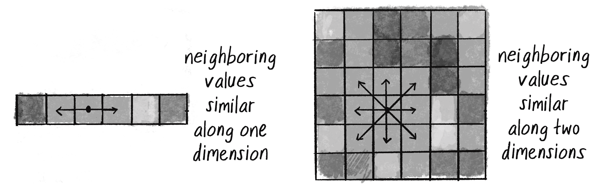
Figure 0.7: Using different offsets along the x-axis to vary Perlin noise values
In truth, no actual concept of time is at play here. It’s a useful metaphor to help describe how the noise function works, but really, what you have is space, rather than time. The graph in Figure 0.7 depicts a linear sequence of noise values in a 1D space—that is, arranged along a line. Values are retrieved at a specific x-position, which is why you’ll often see a variable named xoff in examples to indicate the x-offset along the noise graph, rather than t for time.
Exercise 0.7
In the Perlin noise random walker, the result of the noise() function is mapped directly to the walker’s position. Create a random walker, but map the result of the noise() function to the walker’s step size instead.
Two-Dimensional Noise
Having explored the concept of noise values in one dimension, let’s consider how they can also exist in a two-dimensional (2D) space. With 1D noise, there’s a sequence of values in which any given value is similar to its neighbor. Imagine a piece of graph paper (or a spreadsheet!) with the values for 1D noise written across a single row, one value per cell. Because these values live in one dimension, each has only two neighbors: a value that comes before it (to the left) and one that comes after it (to the right), as shown on the left in Figure 0.8.
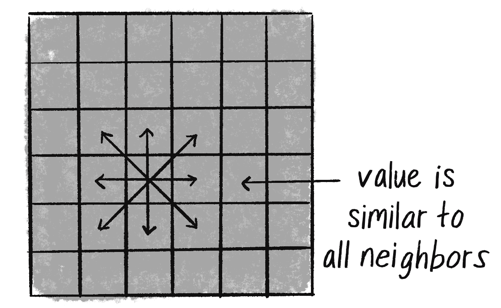
Figure 0.8: Comparing neighboring Perlin noise values in one (left) and two (right) dimensions. The cells are shaded according to their Perlin noise value.
Two-dimensional noise works exactly the same way conceptually. The difference, of course, is that the values aren’t written in a linear path along just one row of the graph paper, but rather fill the whole grid. A given value will be similar to all its neighbors: above, below, to the right, to the left, and along any diagonal, as in the right half of Figure 0.8.
If you were to visualize this graph paper with each value mapped to the brightness of a color, you would get something that looks like clouds. White sits next to light gray, which sits next to gray, which sits next to dark gray, which sits next to black, which sits next to dark gray, and so on (Figure 0.9).
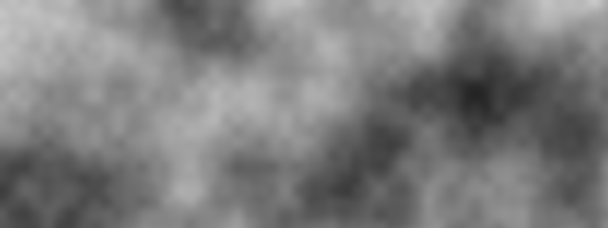
Figure 0.9: In this output of a p5.js sketch visualizing 2D noise, each pixel represents a noise value as a grayscale color.
This effect is why noise was originally invented. If you tweak the parameters and play with color, the resulting images look more like marble, wood, or any other organic texture.
If you wanted to color every pixel of a canvas randomly using the random() function, you would need a nested loop to cycle through the rows and columns of pixels and pick a random brightness for each. Note that in p5.js, the pixels are arranged in an array with four spots for each: red, green, blue, and alpha. For details, see the pixel array video in the “Pixels” track on the Coding Train website.
loadPixels();
for (let x = 0; x < width; x++) {
for (let y = 0; y < height; y++) {
let index = (x + y * width) * 4;
// A random brightness!
let bright = random(255);
// Set the red, green, and blue values.
pixels[index] = bright;
pixels[index + 1] = bright;
pixels[index + 2] = bright;
// Set the alpha value to 255 (no transparency).
pixels[index + 3] = 255;
}
}
updatePixels();
To color each pixel more smoothly according to the noise() function, you can do the same thing, only instead of calling random(), you’d call noise():
// A Perlin noise brightness!
let bright = map(noise(x, y), 0, 1, 0, 255);
This is a nice start conceptually—the code calculates a noise value for every (x, y) position in a 2D space. The problem is that this won’t have the smooth, cloudy quality you want. Incrementing by 1 through the noise space from one pixel to the next is too large a jump. Remember, with 1D noise, I incremented the time variable by 0.01 each frame, not by 1!
A pretty good solution to this problem is to just use different variables for the noise arguments than those you’re using to access the pixels on the canvas. For example, you can increment a variable called xoff by 0.01 each time x increases horizontally by 1, and a yoff variable by 0.01 each time y increases vertically by 1 through the nested loops, as shown next.
// Start xoff at 0.
let xoff = 0.0;
for (let x = 0; x < width; x++) {
// For every xoff, start yoff at 0.
let yoff = 0.0;
for (let y = 0; y < height; y++) {
// Use xoff and yoff for noise().
let bright = map(noise(xoff, yoff), 0, 1, 0, 255);
// Use x and y for the pixel position.
let index = (x + y * width) * 4;
// Set the red, green, blue, and alpha values.
pixels[index] = bright;
pixels[index + 1] = bright;
pixels[index + 2] = bright;
pixels[index + 3] = 255;
// Increment yoff.
yoff += 0.01;
}
// Increment xoff.
xoff += 0.01;
}
I have to confess, I’ve done something rather confusing. I used 1Dnoise to set two variables (this.x and this.y) controlling the 2D motion of a walker. Then, I promptly moved on to using 2D noise to set one variable (bright) controlling the brightness of each pixel in the canvas.
The key difference here is that for the walker, my goal is to have two independent 1D noise values; it’s just a coincidence that I’m using them to move an object through 2D space. The way to accomplish this is to use two offsets (this.tx and this.ty) to pull values from different parts of the same 1D noise space. Meanwhile, in the 2D noise example, both xoff and yoff start at 0 because I’m looking for a single value (a pixel brightness) for a given point in a 2D noise space. The walker is actually navigating two separate 1D noise paths, whereas the pixels are single values in a 2D space.
Exercise 0.8
Play with color, noiseDetail(), and the rate at which xoff and yoff are incremented to achieve different visual effects.
Exercise 0.9
Add a third argument to noise that increments once per cycle through draw() to animate the 2D noise.
Exercise 0.10
Use the noise values as the elevations of a landscape.
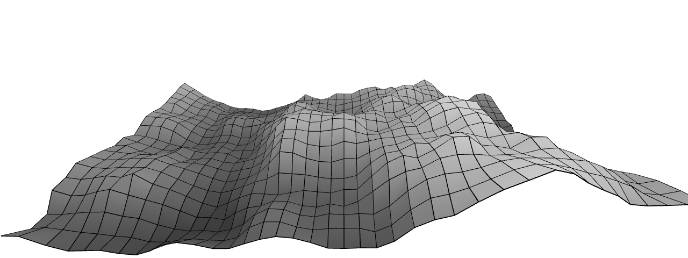
I’ve suggested several traditional uses of Perlin noise in this section. I assigned the smooth values of 1D noise to the position of an object to give the appearance of wandering. With 2D noise, I generated a cloudy pattern by using smoothed values on a plane of pixels. It’s important to remember, however, that Perlin noise values are just that—values. They aren’t inherently tied to pixel positions or color.
Any example in this book that has a variable could be controlled via Perlin noise. When I model a wind force, for instance, its strength could be controlled by Perlin noise. The same goes for the angles between the branches in a fractal tree pattern, or the speed and direction of objects moving along a grid in a flow-field simulation (see Figure 0.10).
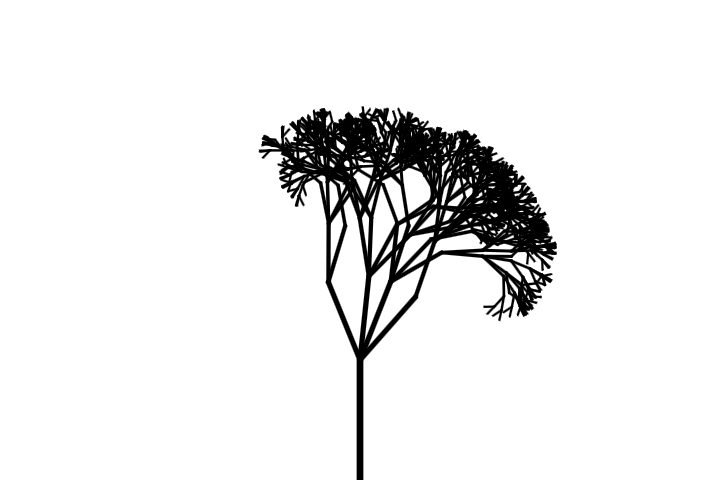
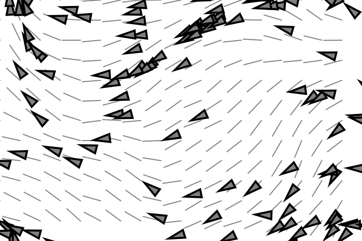
Figure 0.10: A tree with Perlin noise (left) and a flow field with Perlin noise (right)
Just as you can overuse randomness, however, it’s easy to fall into the trap of overusing Perlin noise. How should an object move? Perlin noise! What color should it be? Perlin noise! How fast should it grow? Perlin noise! If that becomes your answer to every question, keep reading. My goal here is to introduce you to a universe of new possibilities for defining the rules of your systems. After all, those rules are yours to define, and the more possibilities at your disposal, the more you’ll be able to make thoughtful, informed choices. Randomness and Perlin noise are just the first stars in a vast creative cosmos that I’ll explore in this book.
As mentioned in the introduction, one way to use this book is to build a single project over the course of reading it, incorporating elements from each chapter as you go. One such possible project is a simulation of an ecosystem. Imagine a population of computational creatures living in and around a digital pond, interacting with one another according to various rules. At the end of each chapter, you will find this same prompt. My goal is to provide ideas on how to incrementally expand your own simulated ecosystem using the concepts explored in that chapter. But feel free to invent your own!
The Ecosystem Project
For your first step, develop a set of rules for simulating the real-world behavior of a creature, building on top of principles from the random walk or other noise-driven motions. Can you simulate a jittery bug that flies in unpredictable ways, or perhaps a floating leaf carried by an inconsistent breeze? Start by exploring how much you can express a creature’s personality purely through its behavior. Then you can think about its visual characteristics.
Here’s an illustration to help you generate ideas for building an ecosystem based on the topics covered in this book. Watch how the illustration evolves in each subsequent chapter as new concepts and techniques are introduced.
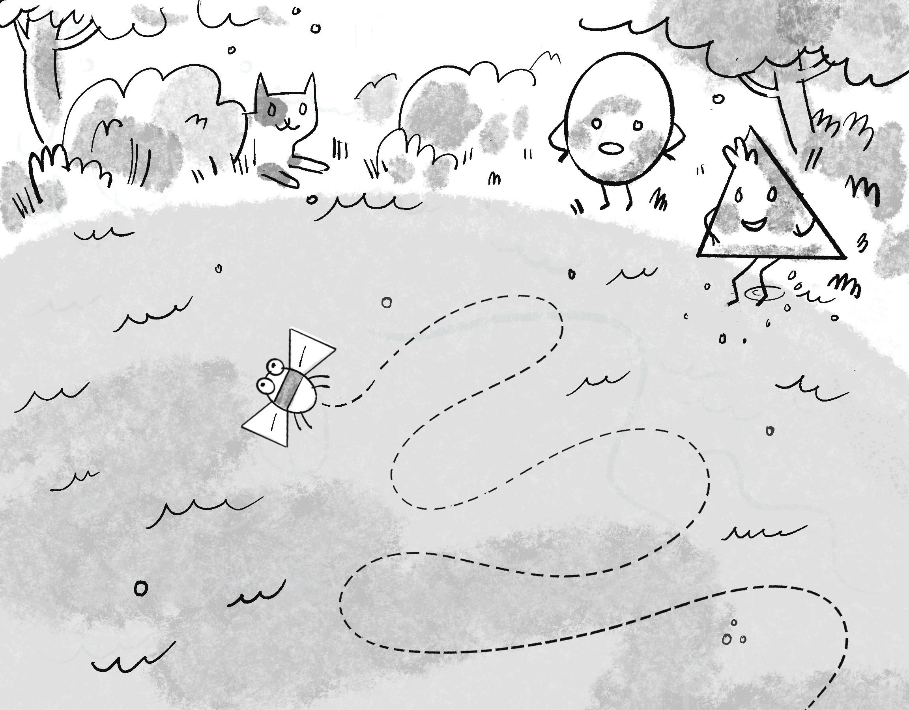
The goal of this book is to demonstrate algorithms and behaviors, so my examples will almost always include only a single primitive shape, such as a circle. However, I fully expect that you have creative sparks within you, and I encourage you to challenge yourself with the designs of the elements you draw on the canvas. If translating designs into code is new to you, the book’s illustrator, Zannah Marsh, has written a helpful guide on drawing for code, which you can find in the appendix.